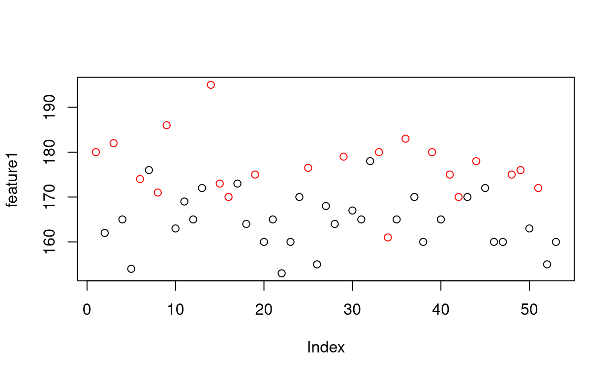
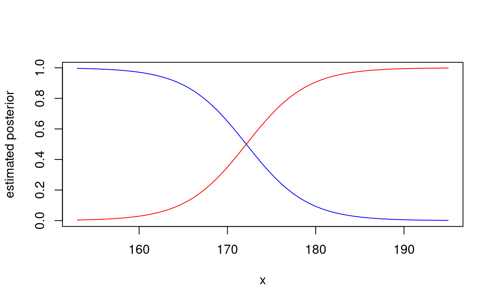
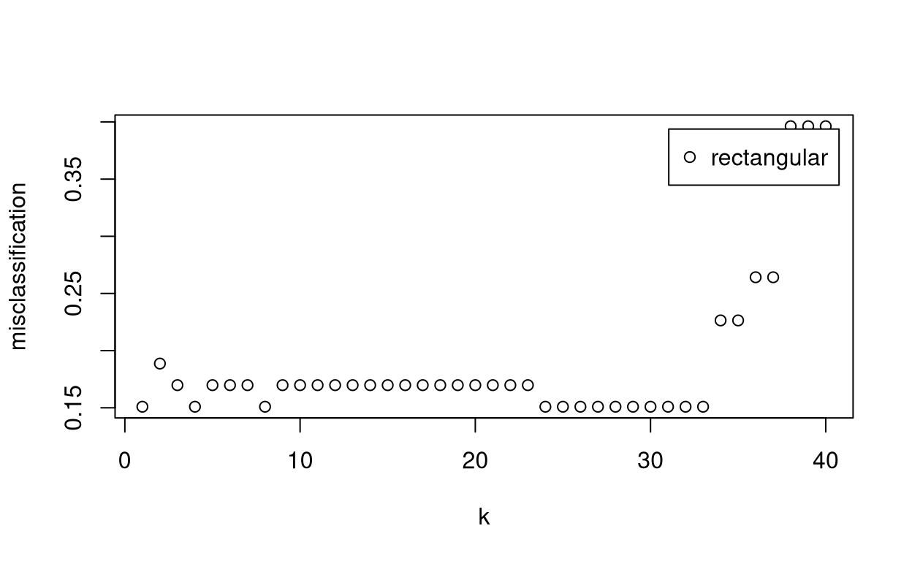
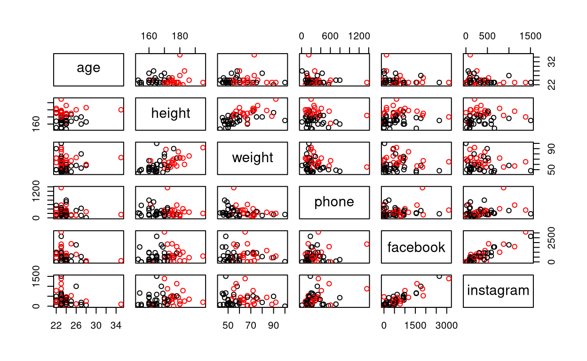
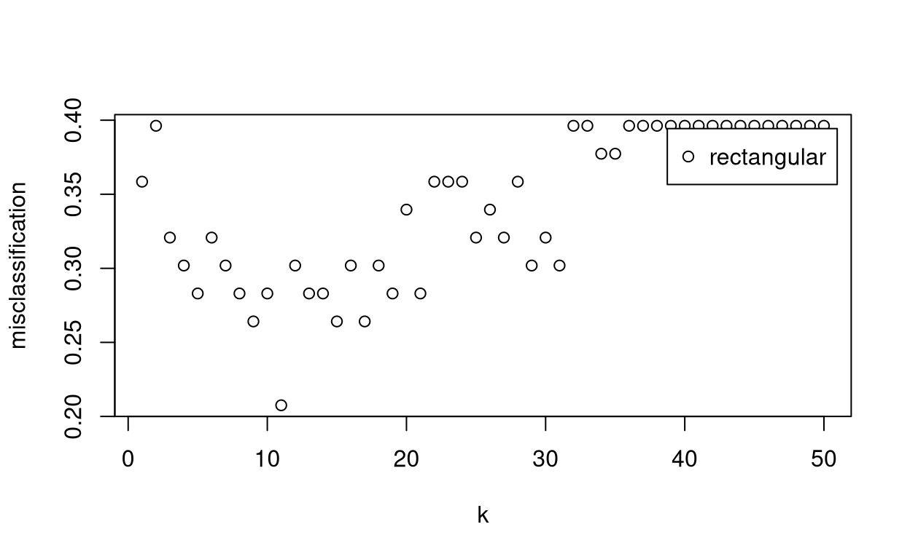
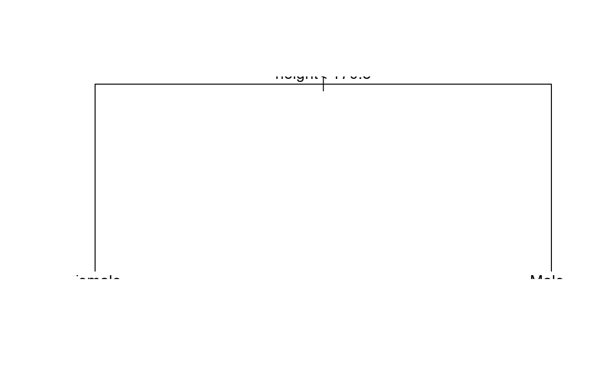

We are going to attempt to classify the gender of a group of humans, based on their heights.
library(MASS)
library(class)
library(kknn)
library(rpart)mydata <- read.table("../data/cleaneddata.txt", header = T, sep = ",")
mydata.gender <- mydata[, 1]
mydata.biosocial <- mydata[, 3:8]
group <- mydata.gender
feature1 <- mydata.biosocial[, "height"]We also make a plot.
plot(feature1, col = group)
We fit the models.
lda.fit <- lda(group ~ feature1)
qda.fit <- qda(group ~ feature1)Estimate the posterior group probabilities provided by the two models for a subject whose height is 175 cm.
predict(lda.fit, data.frame(feature1 = 175))## $class
## [1] Male
## Levels: Female Male
##
## $posterior
## Female Male
## 1 0.3040341 0.6959659
##
## $x
## LD1
## 1 0.8616607predict(qda.fit, data.frame(feature1 = 175))## $class
## [1] Male
## Levels: Female Male
##
## $posterior
## Female Male
## 1 0.300263 0.699737We estimate posterior probabilities on a regular grid provided by the two models
x <- data.frame(feature1 = seq(min(feature1), max(feature1), length = 100))
lda.posterior <- predict(lda.fit, x)$posterior
qda.posterior <- predict(qda.fit, x)$posteriorWe plot the probabilities we obtain using LDA.
# LDA Group 1
plot(x[, 1], lda.posterior[, 1], type = "l", col = "blue", xlab = "x", ylab = "estimated posterior")
# LDA Group 2
points(x[, 1], lda.posterior[, 2], type = "l", col = "red")
and overplot those obtained with QDA.
# LDA Group 1
plot(x[, 1], lda.posterior[, 1], type = "l", col = "blue", xlab = "x", ylab = "estimated posterior")
# LDA Group 2
points(x[, 1], lda.posterior[, 2], type = "l", col = "red")
# QDA Group 1
points(x[, 1], qda.posterior[, 1], type = "l", col = "blue", lty = 2, xlab = "x", ylab = "estimated posterior")
# QDA Group 2
points(x[, 1], qda.posterior[, 2], type = "l", col = "red", lty = 2)We fit the model on a regular grid.
x <- data.frame(feature1 = seq(min(feature1), max(feature1), length = 100))
(knn.fitted <- knn(train = feature1, test = x, cl = group, k = 30, prob = T))## [1] Female Female Female Female Female Female Female Female Female Female
## [11] Female Female Female Female Female Female Female Female Female Female
## [21] Female Female Female Female Female Female Female Female Female Female
## [31] Female Female Female Female Female Female Female Female Female Female
## [41] Female Female Female Female Female Female Female Female Female Male
## [51] Male Male Male Male Male Male Male Male Male Male
## [61] Male Male Male Male Male Male Male Male Male Male
## [71] Male Male Male Male Male Male Male Male Male Male
## [81] Male Male Male Male Male Male Male Male Male Male
## [91] Male Male Male Male Male Male Male Male Male Male
## attr(,"prob")
## [1] 0.9000000 0.9000000 0.9000000 0.9000000 0.9000000 0.9000000 0.9000000
## [8] 0.9000000 0.9000000 0.9000000 0.9000000 0.9000000 0.9000000 0.9000000
## [15] 0.9000000 0.9000000 0.9000000 0.9000000 0.9000000 0.9000000 0.9000000
## [22] 0.9000000 0.8666667 0.8666667 0.8437500 0.8333333 0.8333333 0.8333333
## [29] 0.8333333 0.8333333 0.8333333 0.8333333 0.8125000 0.7878788 0.7878788
## [36] 0.6666667 0.6666667 0.6774194 0.6666667 0.6666667 0.6451613 0.6451613
## [43] 0.6129032 0.6129032 0.5666667 0.5666667 0.5151515 0.5151515 0.5151515
## [50] 0.5000000 0.5142857 0.5142857 0.5142857 0.5142857 0.6333333 0.6333333
## [57] 0.6333333 0.6333333 0.6333333 0.6333333 0.6333333 0.6333333 0.6333333
## [64] 0.6333333 0.6333333 0.6333333 0.6451613 0.6666667 0.6666667 0.6666667
## [71] 0.6666667 0.6666667 0.6666667 0.6666667 0.6666667 0.6666667 0.6666667
## [78] 0.6666667 0.6666667 0.6666667 0.6666667 0.6666667 0.6666667 0.6666667
## [85] 0.6666667 0.6666667 0.6666667 0.6666667 0.6666667 0.6666667 0.6666667
## [92] 0.6666667 0.6666667 0.6666667 0.6666667 0.6666667 0.6666667 0.6666667
## [99] 0.6666667 0.6666667
## Levels: Female MaleWe need to chose \(k\).
train.cv <- train.kknn(group ~ feature1,
data = data.frame(feature1, group),
kmax = 40, scale = F, kernel = "rectangular"
)
plot(train.cv)
We fit the model
rpart.fit <- rpart(group ~ feature1)and stimate the posterior group probabilities for a subject whose height is 175cm.
predict(rpart.fit, data.frame(feature1 = 175))## Female Male
## 1 0.2173913 0.7826087We compute the values on a grid.
x <- data.frame(feature1 = seq(min(feature1), max(feature1), length = 100))
data.frame(x = x, female = predict(rpart.fit, x)[, 1], male = 1 - predict(rpart.fit, x)[, 1])We now consider two classes: Female and Male and six features.
group <- mydata.gender
features <- mydata.biosocial
pairs(features, col = group)
We fit the QDA.
qda.fit <- qda(group ~ ., features)Estimate the posterior group probabilities for the following subject:
kable(data.frame(age = 23, height = 175, weight = 70, phone = 100, facebook = 1000, instagram = 500))| age | height | weight | phone | ||
|---|---|---|---|---|---|
| 23 | 175 | 70 | 100 | 1000 | 500 |
predict(qda.fit, data.frame(age = 23, height = 175, weight = 70, phone = 100, facebook = 1000, instagram = 500))## $class
## [1] Female
## Levels: Female Male
##
## $posterior
## Female Male
## 1 0.6872454 0.3127546We also estimate the posterior probabilities for the subjects in the original dataset.
data.frame(predict(qda.fit))We compute the confusion matrix.
kable(table(True.class = group, Predicted.class = predict(qda.fit)$class))| Female | Male | |
|---|---|---|
| Female | 31 | 1 |
| Male | 5 | 16 |
and the apparent Accuracy and Error Rate.
Conf <- table(True.class = group, Predicted.class = predict(qda.fit)$class)
Accuracy <- sum(diag(Conf)) / sum(Conf)
ErrorRate <- 1 - AccuracyWe compute the confusion matrix
kable(table(True.class = group, Predicted.class = predict(qda.fit, method = "looCV")$class))| Female | Male | |
|---|---|---|
| Female | 25 | 7 |
| Male | 10 | 11 |
and the apparent Accuracy and Error Rate.
ConfCV <- table(True.class = group, Predicted.class = predict(qda.fit, method = "looCV")$class)
kable(ConfCV)| Female | Male | |
|---|---|---|
| Female | 25 | 7 |
| Male | 10 | 11 |
(AccuracyCV <- sum(diag(ConfCV)) / sum(ConfCV))## [1] 0.6792453(ErrorRateCV <- 1 - AccuracyCV)## [1] 0.3207547We fit the model on the original dataset, after rescaling.
rescale <- function(x) {
(x - min(x)) / (max(x) - min(x))
}mydata.biosocial.rescaled <- as.data.frame(lapply(mydata.biosocial, rescale))
group <- mydata.gender
features <- mydata.biosocial.rescaledWe fit the algorithm.
knn.fitted <- knn(train = features, test = features, cl = group, k = 11, prob = T)Estimate the posterior group probabilities for the following subject:
kable(data.frame(age = 23, height = 175, weight = 70, phone = 100, facebook = 1000, instagram = 500))| age | height | weight | phone | ||
|---|---|---|---|---|---|
| 23 | 175 | 70 | 100 | 1000 | 500 |
(knn.fitted <- knn(train = features, test = data.frame(age = 23, height = 175, weight = 70, phone = 100, facebook = 1000, instagram = 500), cl = group, k = 11, prob = T))## [1] Female
## attr(,"prob")
## [1] 0.5384615
## Levels: Female MaleWe also select the value of \(k\) using leave-one-out cross-validation.
train.cv <- train.kknn(group ~ .,
data = data.frame(features, group),
kmax = 50, scale = F, kernel = "rectangular"
)
plot(train.cv)
We plot the confusion matrix
knn.fitted <- knn(train = features, test = features, cl = group, k = train.cv$best.parameters$k, prob = T)
kable(table(True.class = group, Predicted.class = knn.fitted))| Female | Male | |
|---|---|---|
| Female | 28 | 4 |
| Male | 4 | 17 |
We also compute the apparent Accuracy and Error Rate.
Conf <- table(True.class = group, Predicted.class = knn.fitted)
kable(Conf)| Female | Male | |
|---|---|---|
| Female | 28 | 4 |
| Male | 4 | 17 |
(Accuracy <- sum(diag(Conf)) / sum(Conf))## [1] 0.8490566(ErrorRate <- 1 - Accuracy)## [1] 0.1509434WE fit the model and plot the results.
group <- mydata.gender
features <- mydata.biosocial
rpart.fit <- rpart(group ~ ., data = features)plot(rpart.fit)
text(rpart.fit)
Estimate the posterior group probabilities for the following subject:
kable(data.frame(age = 23, height = 175, weight = 70, phone = 100, facebook = 1000, instagram = 500))| age | height | weight | phone | ||
|---|---|---|---|---|---|
| 23 | 175 | 70 | 100 | 1000 | 500 |
predict(rpart.fit, data.frame(age = 23, height = 175, weight = 70, phone = 100, facebook = 1000, instagram = 500))## Female Male
## 1 0.2173913 0.7826087We estimate the probabilities on the original dataset.
data.frame(predict(rpart.fit))We also compute the confusion matrix, the apparent Accuracy and the error rate.
kable(table(True.class = group, Predicted.class = predict(rpart.fit, type = "class")))| Female | Male | |
|---|---|---|
| Female | 27 | 5 |
| Male | 3 | 18 |
# Compute (apparent) Accuracy and Error Rate
Conf <- table(True.class = group, Predicted.class = predict(rpart.fit, type = "class"))
kable(Conf)| Female | Male | |
|---|---|---|
| Female | 27 | 5 |
| Male | 3 | 18 |
(Accuracy <- sum(diag(Conf)) / sum(Conf))## [1] 0.8490566(ErrorRate <- 1 - Accuracy)## [1] 0.1509434